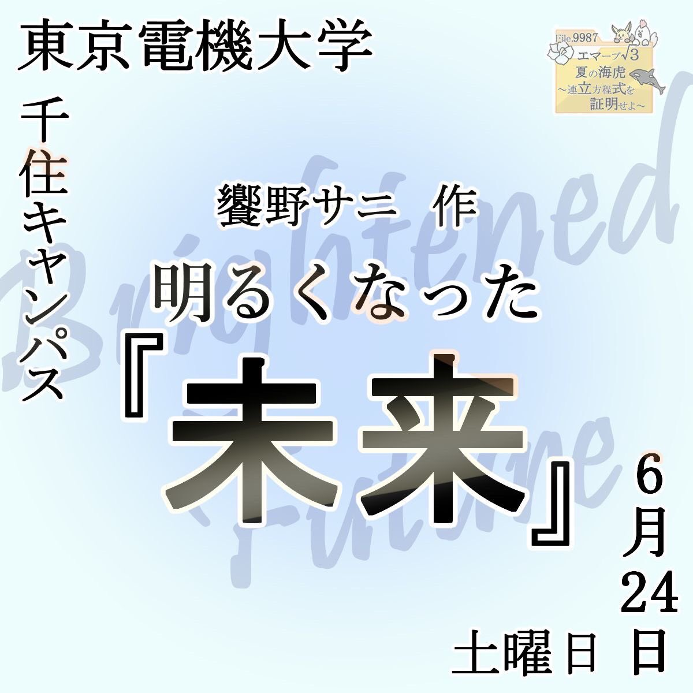
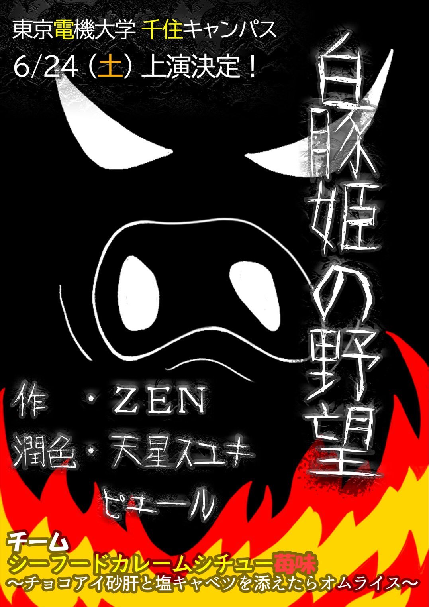

交流劇(新人公演)のご案内
演劇集団【でんげき】は、6/24(土)に劇団カラクリとの合同公演を行います。
公演場所は、東京電機大学千住キャンパスとなっております。鳩山キャンパスではないのでご注意ください。
今回は何と、でんげき・カラクリ合わせて超豪華な3本立てでお届けします！！
ぜひ、足をお運びください。
演目：「Share dall」(劇団カラクリ)/「明るくなった未来」/「白豚姫の野望」
開場：公演①13:00/公演②15:30
開演：公演① 13:30/公演② 16:00
公演時間は途中休憩を合わせて1時間40分程度の予定です。
公演①、②で演目は変わりません。
公演中の入退場はご遠慮ください。


千住キャンパスの劇団カラクリさんの公演詳細は以下のポスターをご覧ください。